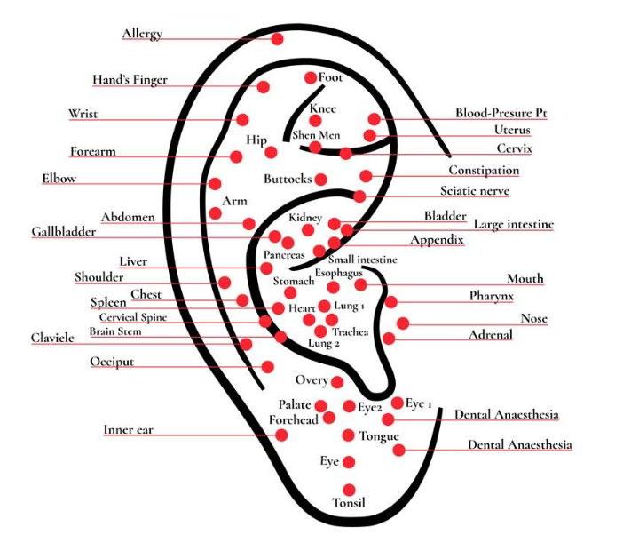

Stres in napetost
Podpora pri sproščanju, notranjem umirjanju in lažji regulaciji telesa.

Podporna terapija
Praktična in neinvazivna metoda, ki se izvaja na zunanjem ušesu ter se uporablja kot podpora pri stresu, bolečinah, razvadah, apetitu in boljšem ravnovesju.
Quantum Health
Aurikuloterapija je uporabna dopolnilna metoda, pri kateri se stimulirajo izbrane akupresurne točke na zunanjem ušesu. V Quantum Health centru se uporablja kot del širše celostne obravnave.
Refleksne točke
S stimulacijo izbranih točk se lahko podpira odziv telesa. Metoda se pogosto uporablja pri sproščanju, stresu, bolečinah, apetitu, škodljivih navadah in podpori splošnega počutja.

Aurikuloterapija se lahko uporablja samostojno ali kot dopolnitev drugih oblik celostne podpore.
Metoda je primerna kot podporna terapija pri kroničnih bolečinah, na primer pri bolečinah v hrbtenici, križu ali vratu. Pogosto se uporablja tudi pri opuščanju škodljivih razvad, kot so kajenje, alkohol ali prenajedanje.
Pred obravnavo se najprej določi namen: stres, napetost, bolečina, apetit, navade ali splošna podpora ravnovesju. Nato se obravnava prilagodi posamezniku.
Kdaj se uporablja
Podpora pri sproščanju, notranjem umirjanju in lažji regulaciji telesa.
Pomoč pri opuščanju kajenja, alkohola, prenajedanja in drugih škodljivih navad.
Dopolnilna podpora pri bolečinah v hrbtenici, križu, vratu in telesu.
Podpora pri anksioznosti, strahu, paniki, spominu in splošnem ravnovesju.
Celostna povezava
Aurikuloterapija se lahko uporablja skupaj z drugimi oblikami podpore. Namen ni nadomestiti zdravniške obravnave, ampak ustvariti dodatno podporo pri napetosti, stresu, bolečinah in navadah.
Najbolj smiselna je takrat, ko je vključena v širši načrt, kjer se spremljajo odzivi posameznika in postopno prilagaja način dela.
Pogosta vprašanja
Kratki odgovori na vprašanja, ki se najpogosteje pojavljajo pri aurikuloterapiji.
Akupunktura običajno uporablja točke po telesu, ki so povezane z meridiani. Aurikuloterapija pa se osredotoča na zunanje uho kot lokaliziran refleksni sistem, povezan s centralnim živčnim sistemom.
Prvi zapisi o ušesni akupunkturi segajo v starodavno kitajsko medicino. Današnja oblika aurikuloterapije pa se je močno razvila v Franciji v 50. letih prejšnjega stoletja.
Sodobna aurikuloterapija temelji na delu dr. Paula Nogierja iz Lyona v Franciji, ki je razvil model ušesa kot refleksnega prikaza telesa.
Aurikuloterapija spada med komplementarne pristope in se lahko uporablja ob akupunkturi, biofeedbacku, refleksologiji in drugih podpornih metodah.
Obravnava se kot komplementarna metoda. Lahko služi kot dodatna podpora, predvsem pri stresu, napetosti in bolečinah, ki niso v celoti razrešene z drugimi postopki.
Mikrosistem pomeni, da manjši del telesa predstavlja širši zemljevid celotnega organizma. Pri aurikuloterapiji je tak mikrosistem zunanje uho.
Oddaljeni refleksi pomenijo, da stimulacija točke na ušesu ni omejena samo na področje glave, ampak se lahko nanaša tudi na druge dele telesa, kot so hrbet, trebuh, noge ali prsni koš.
Gre za refleksne povezave med določenimi področji zunanjega ušesa, možgani in telesom. Ko se določena točka stimulira, naj bi se aktiviral odziv povezanega področja telesa.
Somatotopični obrat pomeni, da je telo na zemljevidu ušesa prikazano obrnjeno. Glava je predstavljena nižje, stopala pa višje.
Izraz se uporablja kot primerjava: en manjši del lahko predstavlja celoto. Pri aurikuloterapiji se to razume kot ideja, da uho odraža širši telesni sistem.
Ena izmed razlag učinka aurikuloterapije pri bolečinah je sproščanje endorfinov, torej naravnih telesnih snovi, ki sodelujejo pri lajšanju bolečine.
Učinek je odvisen od mesta vboda, stanja kože in materiala uhana. Originalna razlaga omenja, da se lahko odziv razlikuje glede na kovino in področje točke.
Izvajajo jo lahko različni ustrezno usposobljeni strokovnjaki, na primer akupunkturisti, terapevti, refleksologi, fizioterapevti, zdravstveni delavci in drugi strokovni profili.
Najpogosteje se uporablja kot podpora pri kroničnih bolečinah, odvisnostih, prenajedanju, slabosti, stresu, napetosti in splošnem uravnavanju telesa.
Po eni razlagi stimulacija točk vpliva na refleksne povezave med ušesom, možgani in telesom. Druga razlaga vključuje sproščanje endorfinov, ki sodelujejo pri naravnem lajšanju bolečine.
V podpornih programih se aurikuloterapija uporablja za pomoč pri zmanjševanju želje po določeni snovi in za podporo razstrupljanju ter uravnavanju živčnega sistema.
Lahko prispeva k boljšemu ravnovesju, zmanjšanju stresa, zmanjšanju bolečin in dopolnitvi drugih terapevtskih pristopov v celostnem načrtu.
Prijava
Pošljite osnovne podatke in kratek opis želje.